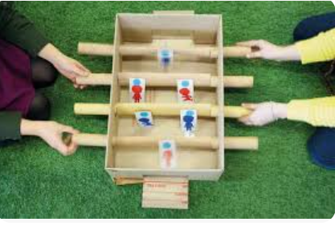

"Ser la marca líder en la creación de juguetes ecológicos a nivel mundial, transformando el sector del entretenimiento infantil con productos 100% reciclables y sostenibles. Aspiramos a que nuestras creaciones estimulen la imaginación de los niños, mientras ayudamos a construir un futuro más verde y consciente, donde el juego y el cuidado del medio ambiente vayan
tenenemos como mision:En arteaga y mas, nuestra misión es inspirar la creatividad y el juego responsable a través de juguetes hechos de cartón reciclado, ofreciendo productos innovadores, seguros y ecológicos. Nos comprometemos a proporcionar alternativas sostenibles que fomenten el desarrollo infantil, respetando el medio ambiente y promuevan valores de cuidado y responsabilidad hacia el
Inicio 